Version 1.3
The biggest update since the game came out: a second endless mode, a challenge that changes every day, and a field full of bricks that do things. It is finished and in testing now, and arrives soon, alongside iOS 27.
Endless Mayhem
Endless mode, let off the leash. The field descends as it always did, but now the bricks fight back: they fall, wander, spin, explode, fill the gaps around them and open portals across the screen. Thirty-seven new power-ups change the ball, the paddle and the field itself, and there are enough of them that no two runs go the same way.
Daily Challenge
One run a day, the same for everybody, wherever they are. A day picks a mode, a level and a couple of twists, and your first attempt is the one that counts. Play it again as much as you like afterwards; those runs are free play, and are labelled as such. Keep a streak going, or go back and try any of the last thirty days.
The twists
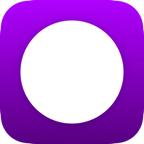
One LifeStart with only 1 ball.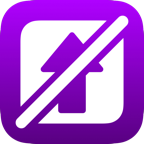
No Power-UpsJust the paddle, the ball and the bricks.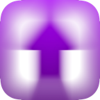
DroughtPower-ups are rare.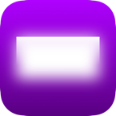
FoggyEvery brick starts invisible.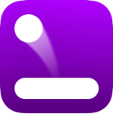
MirroredFlips the level horizontally.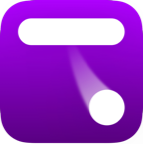
Upside DownFlips the level vertically.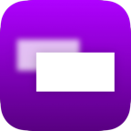
Brick SwapBrick types are swapped around.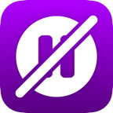
No BreaksThe pause button is disabled.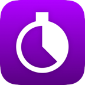
Time TrialNinety seconds, and unlimited balls.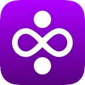
Extra MayhemBrick variety is dialled up.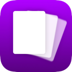
Full DeckEverything is in play from the start.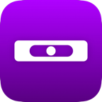
Level PeggingRarity rules are removed.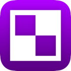
MonochromaticAll colour is drained from the game.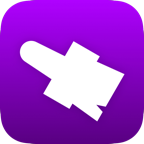
Theme daysOne of the game's themes is applied for the day.Bricks that are not rectangles
A brick is now several things at once: what shape it is, what size, how it moves, and what it does when the ball arrives. They combine, which is how you get a spinning indestructible brick, an obstacle you cannot remove that shows you a different angle every time the ball reaches it.
Shapes
Sizes
Movement
When it is hit
Thirty-seven more ways to change a run
The existing twenty-eight are untouched. These are new to Endless Mayhem, and fifteen of them are working against you: green awards points and helps, red deducts and does not. Most run on a clock, shown as a ring around the icon, and a second one of the same kind extends it rather than starting it over.
On your side
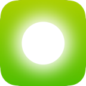
Ball AuraA glow around the ball destroys whatever it touches.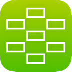
Brick CullDestroys bricks at random.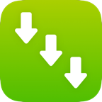
Brick DescentBrings the field down continuously while it runs.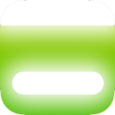
PortalThe ball enters a portal via the paddle.Against you
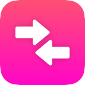
Reversed Paddle ControlThe paddle goes the other way.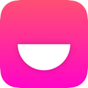
Ghost BallThe ball turns invisible above the lowest bricks.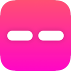
Split PaddleThe paddle breaks into pieces with gaps between them.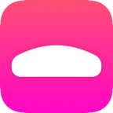
Convex PaddleThe paddle becomes convex, and every bounce off it changes with it.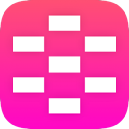
Brick InfillPuts bricks back into empty spaces. Very bad.And the rest of it
Smaller things, mostly asked for by the people who play it.
Straight in
Every mode on the main menu has a play button that starts a game straight away. Classic takes you to your next pack, and a red dot tells you today's challenge is waiting.
Ring timers
Power-up timers moved from a bar under each icon to a ring around it, so you can read what is running at a glance.
Run stats
Every endless run now ends with its own numbers: height, time, paddle hits, bricks destroyed, and which power-ups you kept missing.
Recents
Pause mid-run and the reference pages show what you have actually collected this run, and what each one did.
New menus
Every mode has its own menu with the right leaderboard on it, and a finished run returns to the one it started from.
Carry on
Close the app mid-run and it picks up where you left off, daily challenges included.
Scores that count up
Finish a level or a run and the numbers tally up to where they landed, with the ticking to match.
Your music
Choose which of the four tracks play, in the menus and in the game. Untick them all and the music is off.
Liquid Glass
On iOS 26 and later the menus are built from Apple's new glass: buttons, rows and pop-ups that take their colour from the game behind them. On earlier versions everything looks exactly as it always has.
Everything at a glance
Packs, app icons, ball and paddle themes, power-ups, bricks and achievements are grids rather than lists, so you can see the lot without scrolling past it.
Statistics worth reading
Split by mode, with the numbers a brick breaker should have kept all along: your best single ball, your average hits per ball, and, in the endless modes, which power-up you climbed the furthest with.
iPad windows
Resize the window however you like. The play area keeps the same shape on every device, so the game plays exactly the same on your iPhone and your iPad.
120Hz
On iPhones and iPads with ProMotion the game runs at up to 120 frames a second.
Accessibility
Every button has a name for VoiceOver, and the game follows your Reduce Motion setting as well as its own.
What comes after
These are plans rather than promises, and the order may change. Whatever arrives, the eleven Classic packs and the leaderboards you have been climbing since 2020 stay exactly as they are: new ideas ship as new modes and new packs, never as changes to old ones.
- Accessibility. Text that follows your size setting, a colour-blind option, and an assist mode with a slower ball and a wider paddle.
- A Home Screen widget to start a mode and see your best.
- Carry a run between devices. Start on your iPhone, finish on your iPad.
- Daily Challenge reminders, and a card to share your result.
- New level packs built from the new bricks, including seasonal ones.
- A speed-run mode with leaderboards for time.
- More languages.
- Mac and Apple Vision Pro.
Want to play it early?
There will be a public TestFlight for 1.3 so you can break it before everybody else does. The link is waiting on Apple's review of the beta.
Email contact@giga-ball.app with "TestFlight" in the subject and you will be added to the waiting list.